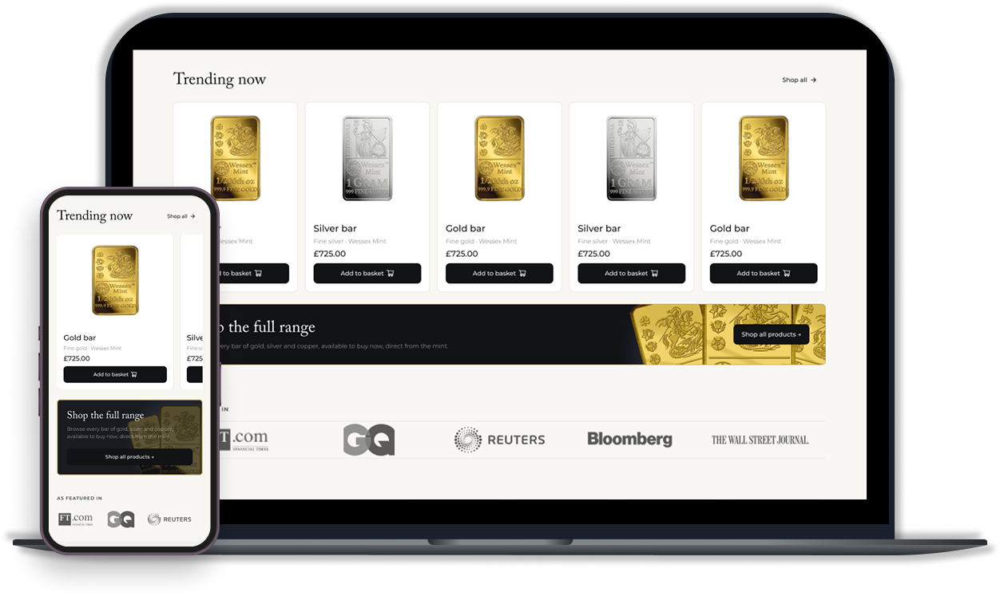
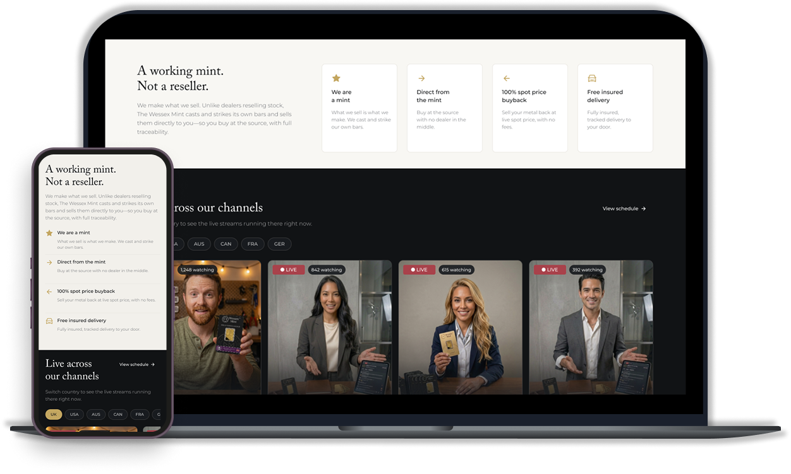
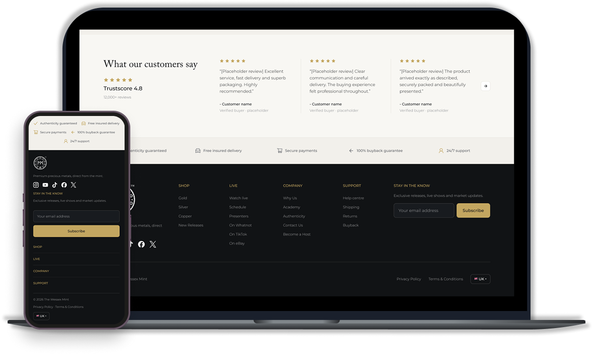

De estructura funcional a experiencia premium
Diseñar una homepage de live commerce que conectara transmisión, producto, confianza y compra dentro de una experiencia responsive clara.
Un sistema premium para una categoría de alto valor
Una base editorial, componentes reutilizables y acentos visuales pensados para mantener claridad y consistencia entre Desktop y Mobile.
Serif para jerarquía, sans para interacción.
Charcoal, ivory y gold para contraste y énfasis.
Variables semánticas y componentes reutilizables.
El live como eje de compra
La experiencia organiza transmisión, producto y confianza dentro de una misma jerarquía, manteniendo la compra como acción principal sin sacar al usuario del contexto del live.

La jerarquía se mantiene, el patrón cambia
La adaptación mobile conserva prioridades, pero cambia el patrón cuando el contenido lo necesita.
La navegación lateral preserva tamaño de producto y legibilidad.

Los beneficios se simplifican para reducir peso visual y scroll innecesario.

La navegación secundaria se compacta para priorizar contenido y reducir longitud.

Una experiencia pensada para comprar en vivo
Una experiencia responsive que conecta contenido en vivo, descubrimiento de producto y confianza dentro de una misma identidad visual.